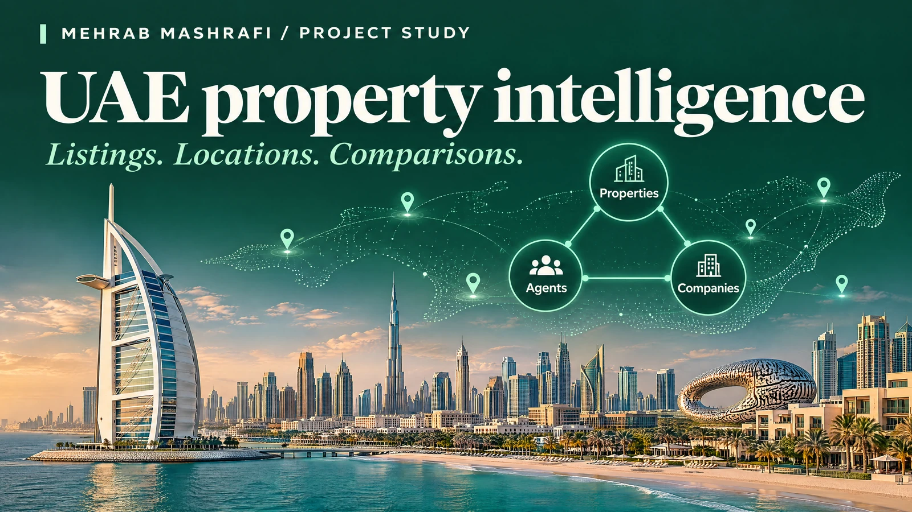
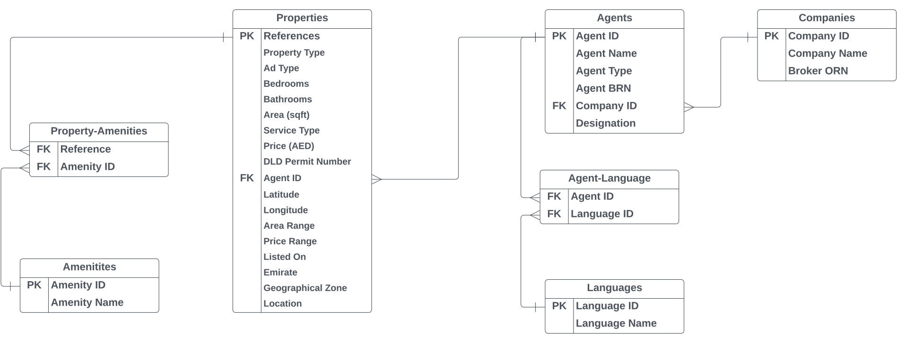

UAE real estate · Market and geospatial analysis
Making UAE property listings easier to compare
A property listing tells only part of the story. I collected listing data, organised the relationships behind it and added geography, then built Tableau views for comparing properties, agents and companies.

- My role
- My contribution: scraping, Python cleaning, relational modelling, geocoding and Tableau
- Tools and scope
- PropertyFinder listings · Python · GIS · Tableau
- Context
- Personal research and portfolio project
01 / The situation
A collection of listings is not yet a comparison
Property listings mix prices, property types, locations and agent details. I wanted to make those records comparable so a viewer could explore similar properties and see the relationships between listings, agents and companies.
The initial collection was not neatly structured. Search results did not contain all the detail I needed, and records could return different sets of fields. Those differences had to be handled before the dataset could support analysis.
02 / My role
Turn irregular records into related tables
I built a scraper for PropertyFinder.ae that gathered property details and visited individual listing pages for additional property and agent information. I cleaned the extract in Python, handling missing fields, duplicates and formatting.
I separated properties, agents, companies, languages and amenities into related tables with identifiers. This replaced one complex flat extract with a structure in which those entities and their connections could be examined separately.

How a listing becomes a comparison
- 01
Property listings
- 02
Python cleaning
- 03
Related entities
- 04
Geocoded locations
- 05
Tableau comparisons
A structured dataset connects listing details to the people, organisations and places behind them.
03 / How it works
Put place alongside price
Street addresses provided a route to geographic analysis even though the initial extract did not include coordinates. I used geocoding to enrich the location fields, then prepared the data for Tableau.
I built views for comparing property type, price, area, amenities and location, along with a separate view of agents and companies. Viewers can change the slice of the dataset rather than relying on one static market summary.
04 / The outcome
Two ways to explore the same market dataset
The outcome is a cleaned relational dataset and interactive Tableau views for property insights and agent and company analysis. The work demonstrates how collection, modelling and geographic enrichment support a more useful comparison.
These are historical advertised listings. An asking price is not a completed transaction price, and changing availability limits what a past listing can tell a buyer today. The dashboard is a research demonstration, not a valuation or investment recommendation.
Watch the project
Watch the UAE property analysis walkthrough
I walk through the data preparation and interactive Tableau analysis. Watch on YouTube ↗
05 / Explore the work
Open the dashboards and source
Have a dataset that needs a clearer path to use?
Tell me what you want to compare or predict, where the records come from and who will use the result.
Discuss your project Email meProject by Mehrab Mashrafi. Updated .